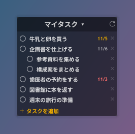
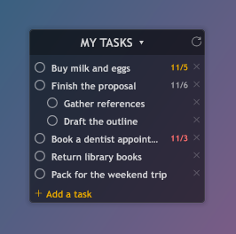

Tasks Sync for Rainmeter
Google Tasks をデスクトップで双方向に。
Two-way Google Tasks on your Windows desktop.


ダウンロード / Download セットアップ手順 / Setup guide
オープンソース（MIT ライセンス） / Open source (MIT)
Google Tasks をデスクトップで双方向に。
Two-way Google Tasks on your Windows desktop.


ダウンロード / Download セットアップ手順 / Setup guide
オープンソース（MIT ライセンス） / Open source (MIT)